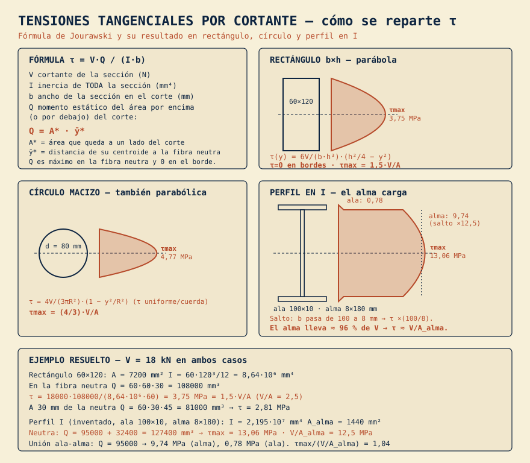

De τ = V·Q/(I·b) al reparto real en rectángulo (τmax = 1,5·V/A), círculo (4/3·V/A) y perfil en I (salto en la unión ala-alma), con un ejemplo numérico resuelto.
Tensiones · Cortante · Vigas · Jourawski · Esquema
